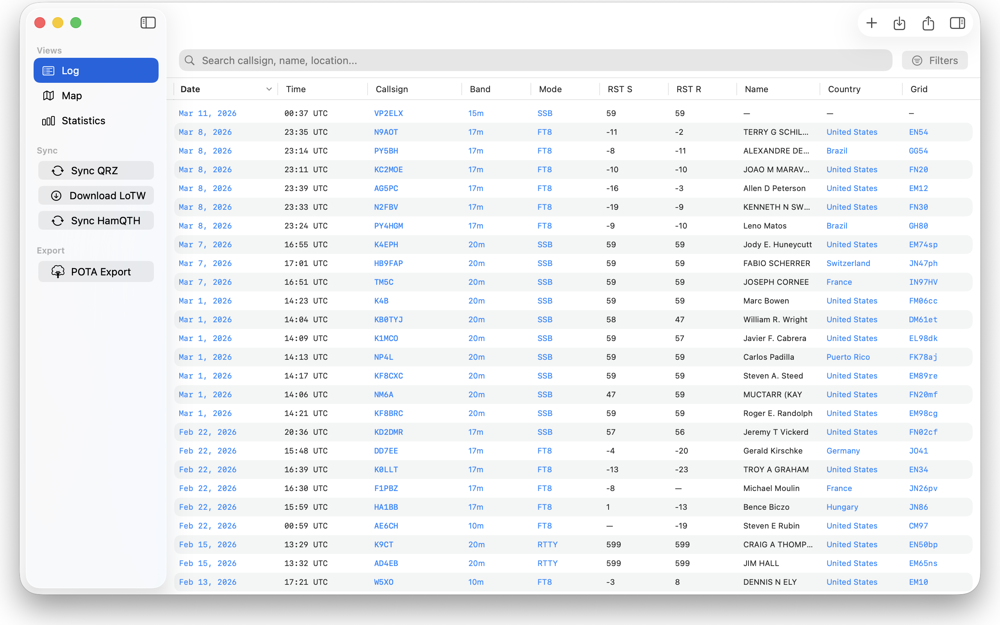
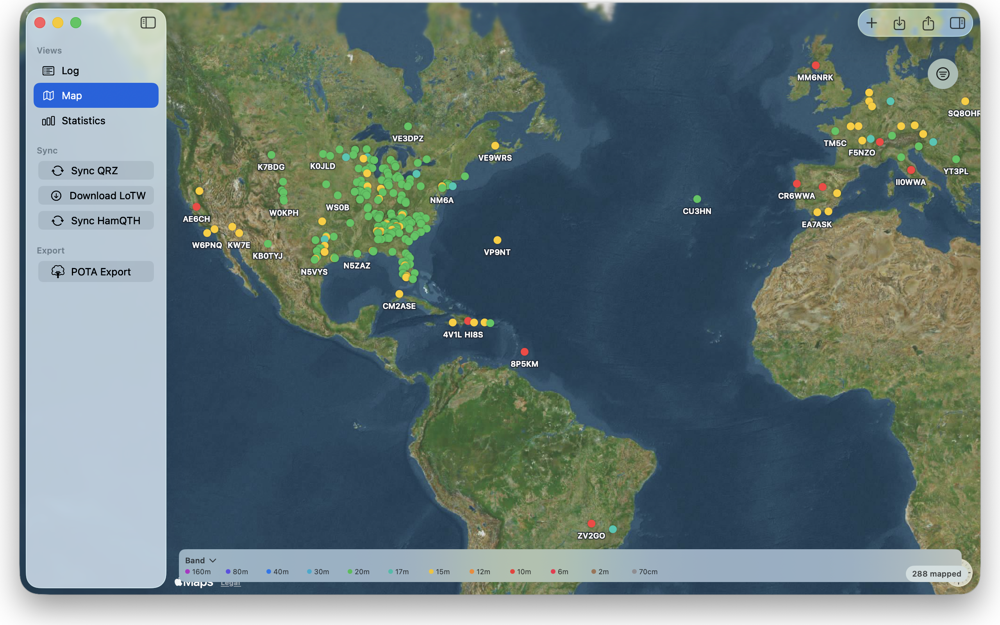
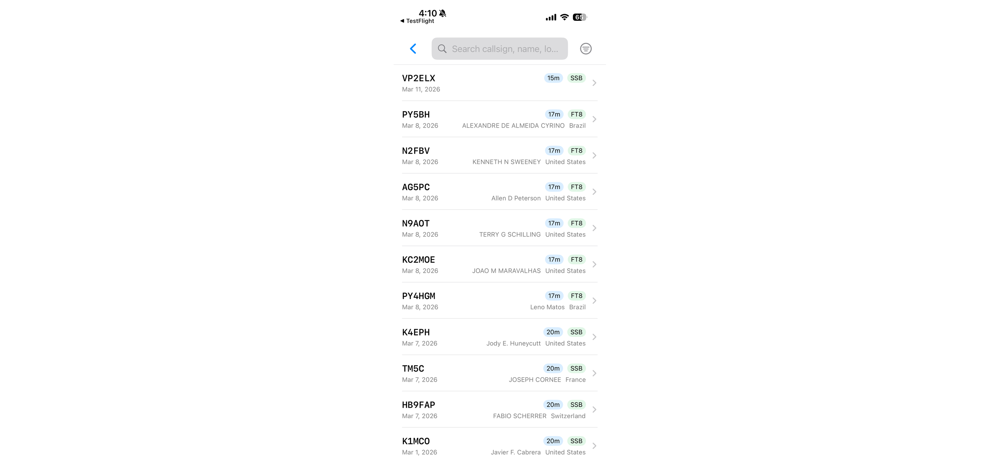

QSO
A ham radio logbook for Mac, iPad and iPhone
About
- A native SwiftUI app on each platform
- Your log syncs between devices through your own iCloud account
- Imports and exports standard ADIF, plus POTA-formatted logs for activation uploads
- No accounts, no servers, no subscriptions
- Made by W2ASM
Features
- Logging
- Full ADIF field support: band, mode, frequency, signal reports, grid squares and more. Callsigns are looked up on QRZ or HamQTH to fill in operator details. Your last band, mode, frequency and power are remembered.
- Map
- Every contact with a grid square or coordinates appears on a map. Colour pins by band, mode or signal strength. Filter by time, band or mode. Tap a pin to see every QSO with that station.
- Statistics
- Countries, US states and unique callsigns worked. QSO counts by band and mode. Furthest contact and weakest report. Tap any number to jump to the matching log entries.
- Search and filters
- Search callsigns, names, locations, countries and comments. Filter by band, mode, date range, country, state, grid prefix, CQ zone, ITU zone, continent or county. Tap any value in the log to filter by it.
- QRZ, HamQTH and LoTW
- Two-way sync with QRZ.com and HamQTH with deduplication. LoTW downloads your QSL confirmations and marks confirmed contacts.
Screenshots

Log view on the Mac

Contacts on the map, coloured by band

Log on the iPhone
Links
← W2ASM